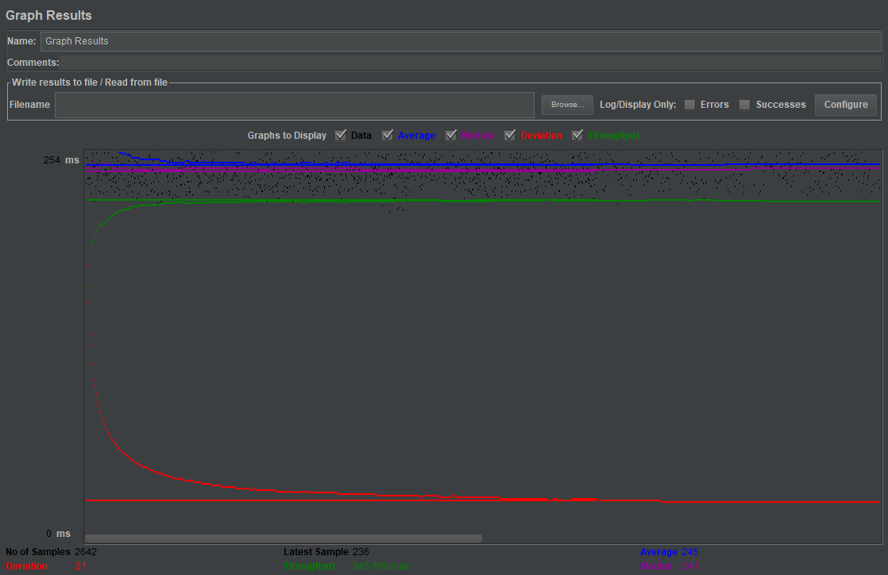
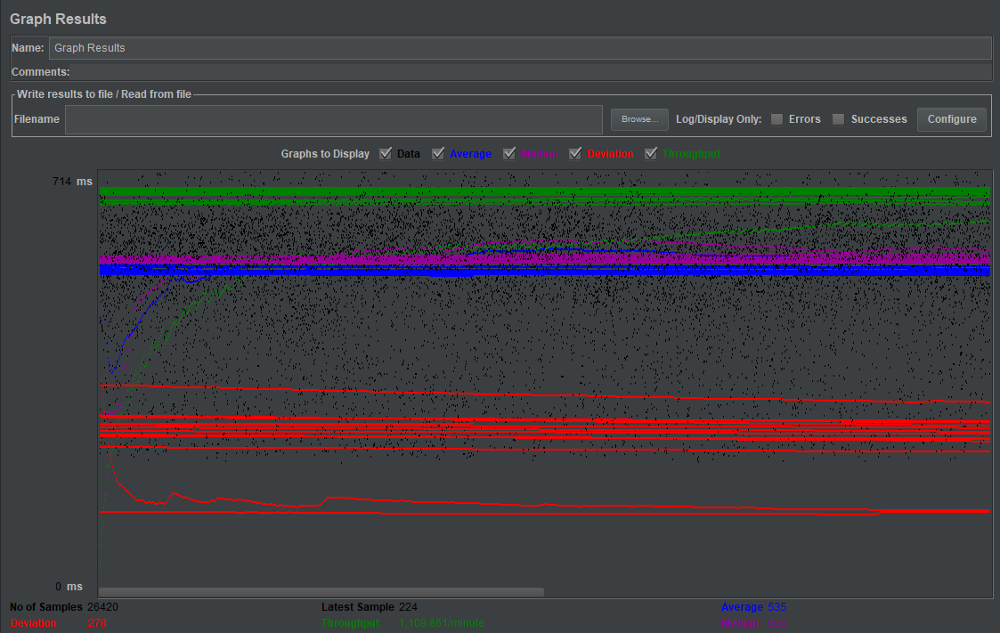
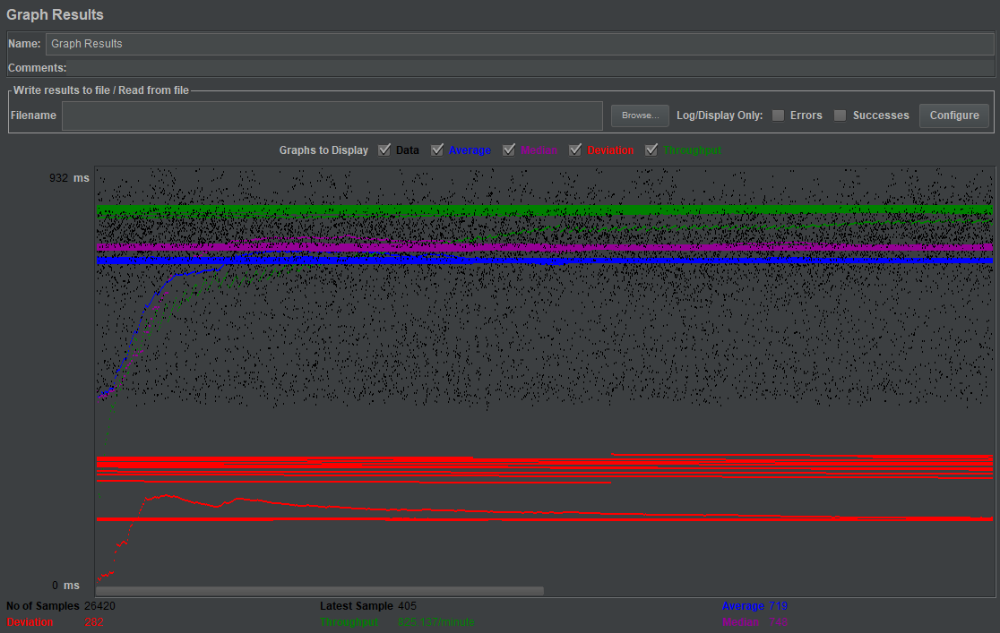
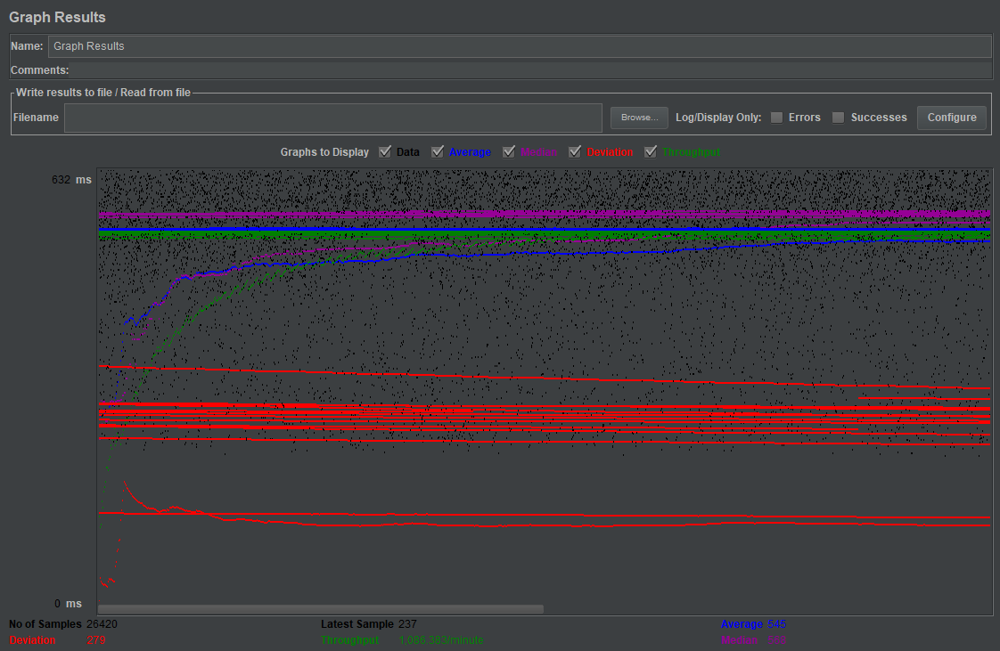
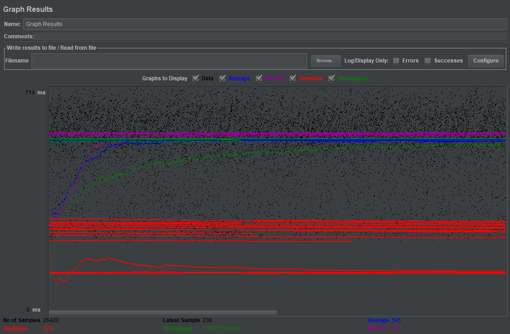
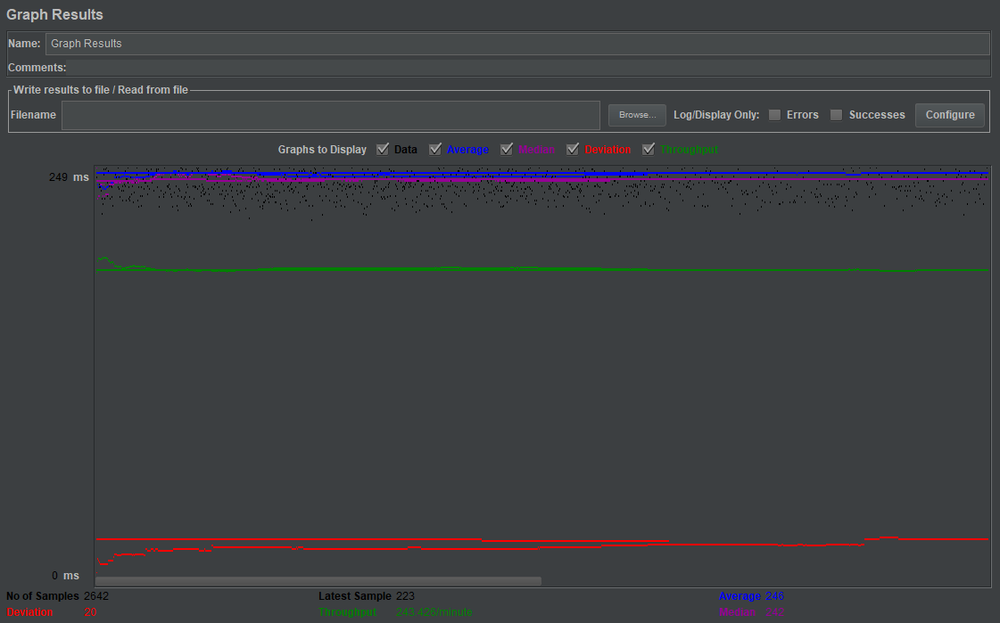
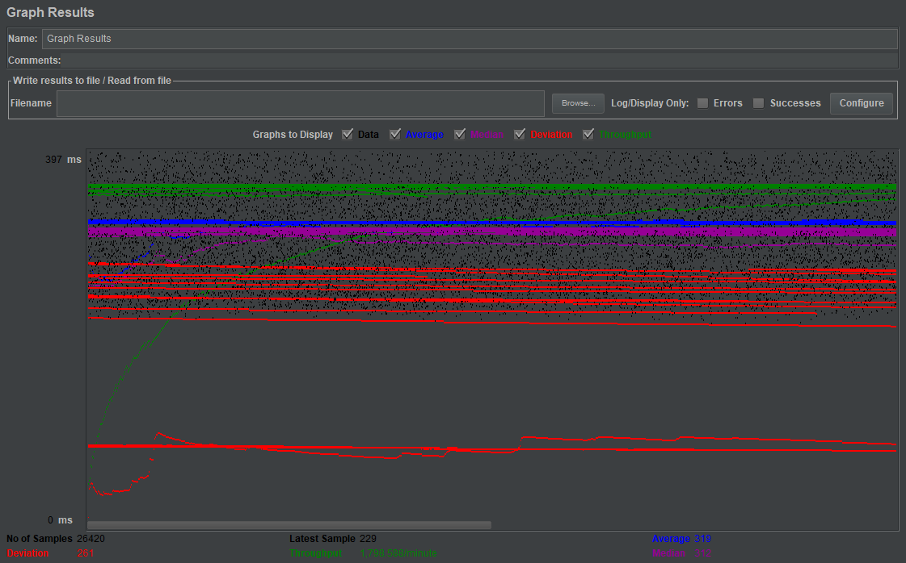
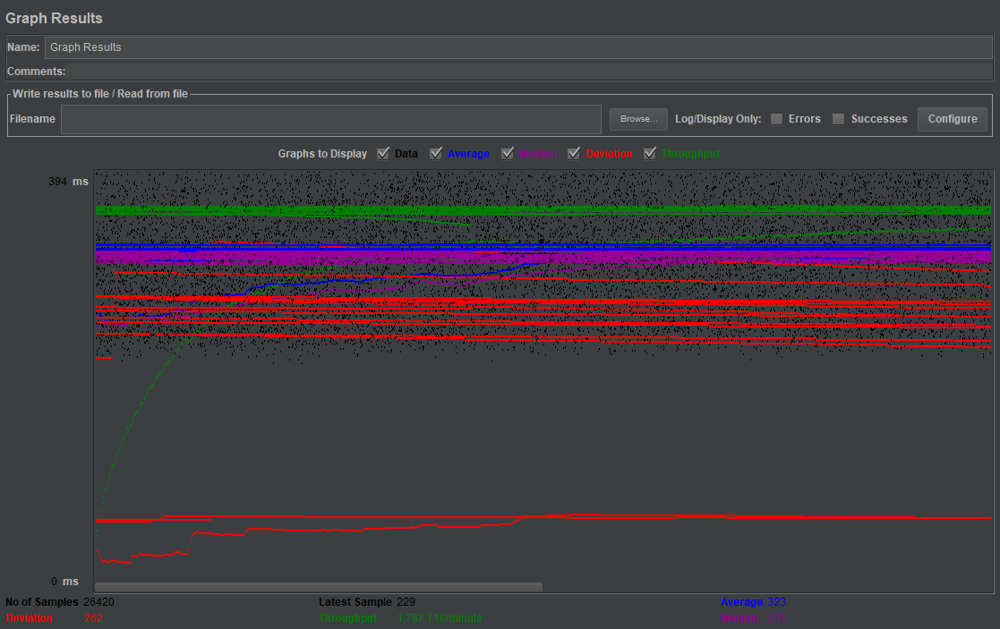
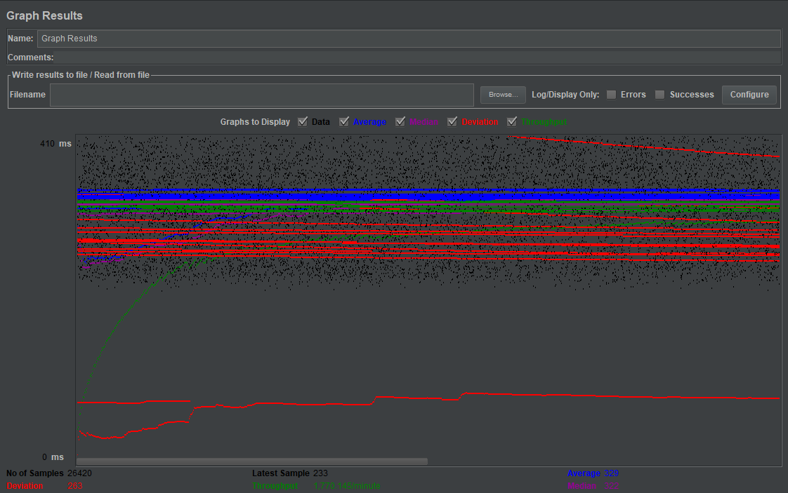

| Single-instance version cases | Graph Results Screenshot | Average Query Time(ms) | Average Search Servlet Time(ms) | Average JDBC Time(ms) | Analysis |
| Case 1: HTTP/1 thread |  | 245 | 48.76 | 47.22 | If the number of threads are reduced to one, all of the time will become lower. |
| Case 2: HTTP/10 threads |  | 535 | 328.75 | 323.93 | Compared to the one without prepared statements or without connection pooling, there is no much difference. All of the time required are slightly lower than them. |
| Case 3: HTTPS/10 threads |  | 719 | 325.13 | 320.28 | When using HTTPS, the average query time will become larger. TS and TS remain similar. |
| Case 4: HTTP/10 threads/No prepared statements |  | 545 | 330.93 | 326.36 | It’s similar to the result that uses prepared statements. TS and TJ are slightly larger than that. |
| Case 5: HTTP/10 threads/No connection pooling |  | 545 | 328.68 | 324.1 | It’s similar to the one using connection pooling. The average query time is a bit larger than that. |
| Scaled version cases | Graph Results Screenshot | Average Query Time(ms) | Average Search Servlet Time(ms) | Average JDBC Time(ms) | Analysis |
| Case 1: HTTP/1 thread |  | 246 | 47.05 | 45.74 | Compared to single-instance, all of time required are similar. 1 thread in scaled version is also a lot smaller than 10 threads. |
| Case 2: HTTP/10 threads |  | 319 | 113.14 | 110.26 | Compared to single-instance, all of the time required are smaller. Compared to others in scaled version in 10 threads, all the time required are the same. The average query time is slightly smaller. TS and TJ are slightly bigger. |
| Case 3: HTTP/10 threads/No prepared statements |  | 323 | 112.05 | 109.6 | Compared to single-instance, all the time required are a lot smaller. Compared to the one using prepared statements in scaled version, the time required are all similar. All the time required are slightly smaller. |
| Case 4: HTTP/10 threads/No connection pooling |  | 329 | 116.97 | 114.47 | Compared to single-instance, all the time required are a lot smaller. Compared to the one using connection pooling in scaled version, all of the time required are slightly larger. |